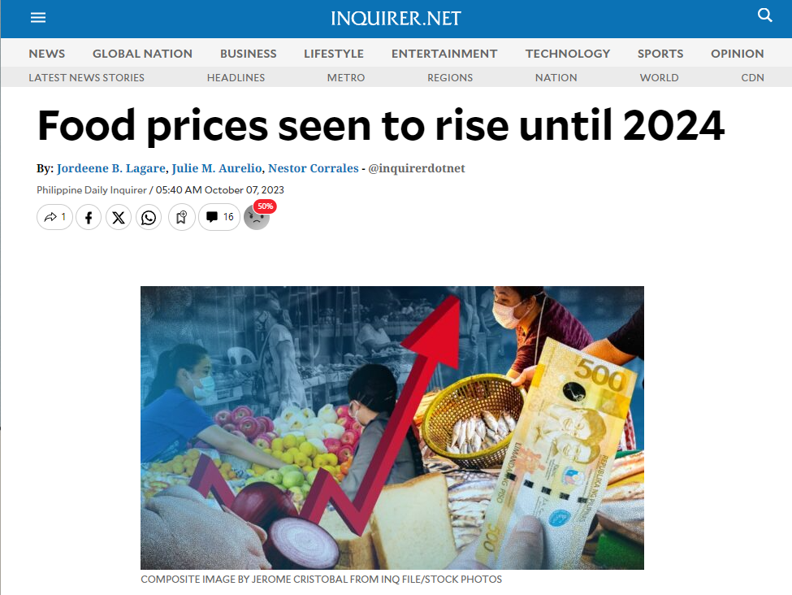

On investigating Food Prices in the Philippines...
Our project is an analysis of the food price trends in the Philippines over the past years, and in relation to the common Filipino household's average income. AS&R seeks to utilize the data science concepts we have learned in this course to investigate the issue, and acquire new knowledge that may help our country.
"Hayaan mong maging gamot ang iyong pagkain,
at maging pagkain ang iyong gamot."
Food is essential in ensuring a person's survival, but beyond that, it is also an essence of Filipino culture. From our many local specialties to family recipes, the precious time spend with loved ones during mealtimes, and our display of Filipino hospitality to guests with a simple merienda snack. Food has the ability to bond a household, but it is a reality that the state of Philippines' food pricing is potentially headed upward, and not all families may have the luxury of being able to adapt to these price changes.
As such, the group has chosen to focus on the rise and variation of food prices in the Philippines, hoping to utilize data science to observe trends that might provide new information on the issue.
| Problem | The rising or unstable prices of common food items makes it difficult for Filipino families to afford food. |
|---|---|
| Solution | Our solution is to use data science to gain insights on the price increases or variation, analyze the trends of food prices in different regions in the Philippines over the years, and to determine whether the average incomes of Filipino households across the country are sufficient enough to afford the food items. |